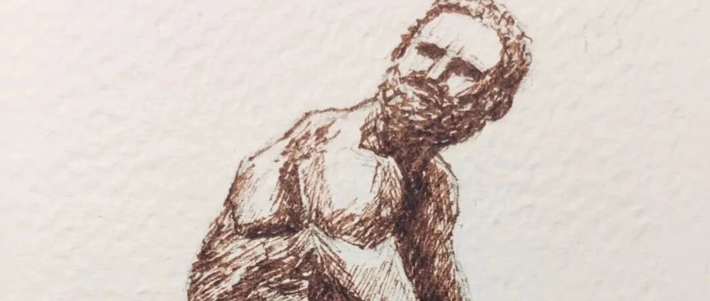

看展那些事儿
原创
LCX
LCX
PaintingDiary
2022年08月14日 17:35
北京
在小说阅读器中沉浸阅读
我还蛮喜欢看展的，但是看展有风险，有时花了重金看到的展览可能远不如免费的。
这周我就深有体会。当然不喜欢多半是因为自己文化水平有限，看之前一无所知，看之后一知半解。只能一脸问号，云里雾里地出来了。
这周看的是什么呢？
就是国博最近的重磅展览——意大利之源《古罗马文明展》。
这大概是我第二次折在了意大利的展览，上一次是几年前的——归来《意大利返还中国流失文物展》。说起来这两个展览有点像，都是很多出土的瓶子罐子、武器首饰、还有刻满了诸神的柱子或者雕像，年代久远，细节已经被腐蚀得一干二净。有的确实精美绝伦，在当时也属于非常罕见的，但是也很难打动鄙人。对这段历史熟悉的朋友可能会很喜欢这个展览，可以看到很多文物去印证和丰富自己心中的历史故事，但是对于历史和地理都勉强及格的我来说，看这种展览真是有些力不从心。
当然这几年看了这么多展览，大多数还是很喜欢的，我回想了下，大概分成两类：
第一类就是大开眼界类，比如紫禁城里过大年、故宫的卡地亚展。满眼的钻石翡翠玛瑙，镶嵌在日常使用的毫不起眼的物件中，一边看一边惊掉下巴。皇家生活的极致奢华不看看展，实在是我等穷人想象不到的。
第二类就是故事细腻类，这类展览还是比较多的，大多数展品都和故事一起出现，代入感比较强，容易引起情感上的共鸣。
比如之前看过的莫奈展、梁思成诞辰120周年展览等。莫奈展上将莫奈和妻子卡米尔的感情，通过莫奈的各种画作展现出来，包括卡米尔去世的那瞬间也被莫奈画下来，和两个人刚结婚时莫奈画作的色彩鲜艳形成了剧烈的反差，所有看到画的人都能感受到莫奈的悲伤。梁思成展中，展示了很多他上学时的作业、画稿。从他申请国外学校时手写工整申请书，到画稿上细小但清晰的注释里就能感受到他认真、沉稳的性格。
莫奈：临终的卡米尔
梁思成手稿
这么想来，可能就是因为年代不是特别久远，故事的细节还没有被风化，我们才有可能通过这些展品和当时的人进行情感上的联结。那些公元前几世纪的文物，早已不知道主人是谁，只有一些面目模糊的描述，只能用来扩充下知识面了。
不过去看展览，展览虽然不尽如人意，但总能有些意想不到的收获。比如昨天看展之前，先去趟前门吃了顿爆肚，在爆肚满家被小小的烧饼夹肉震撼到了，发誓以后要带所有来北京找我玩的朋友来吃。新烙出来的芝麻烧饼还有些烫手，夹着比烧饼还厚出许多的牛羊肉，别提多好吃了。昨天一整天都被它的能量治愈着，即使展览一般，国博里冷得可以冻死人，但还是美滋滋、心满意足地回家了。
另外昨天结束路过书店，偶然翻到了一本关于写作的书，也让我今天萌生了大谈特谈的冲动，不管写作水平如何，一定要好好抒发下自己的真情实感才行。
这也是为什么今天突然话多了这么多的原因，并不是因为画的比较草率哦～
对了，今天画的是昨天最打动我的一个展品——《拳击手》，他在展厅的最前面，虽然展厅中到处都是人，但他周围就是笼罩着一种孤独和绝望。他身上的伤口和悲伤的神情仿佛会说话一般，伤口处镶嵌的紫铜，就像有鲜血正从伤口渗出。虽然是公元前1世纪的作品，但表达的情感却异常强烈，是所有展品中让我印象最深刻的一个。
感谢你看到这里～虽然我不太喜欢，但毕竟是国博重量级特展，还是推荐大家去看一看～一起交流下感受～也欢迎在评论区留下你最喜欢的展览～
欢迎留言、转发or给个"在看"～
下回见～